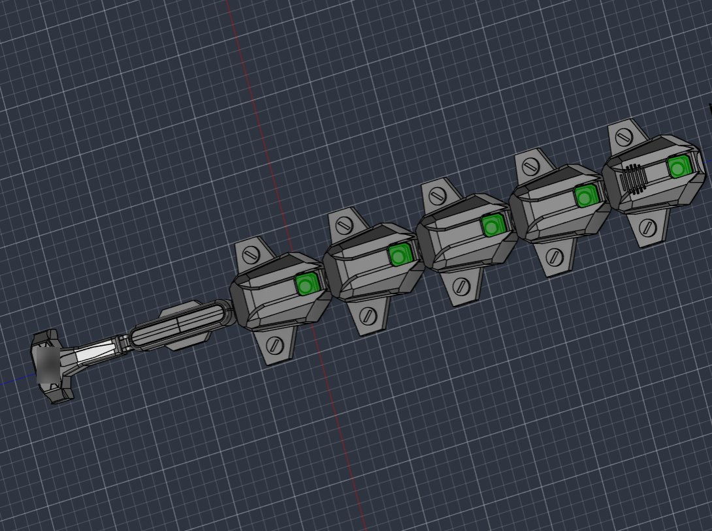
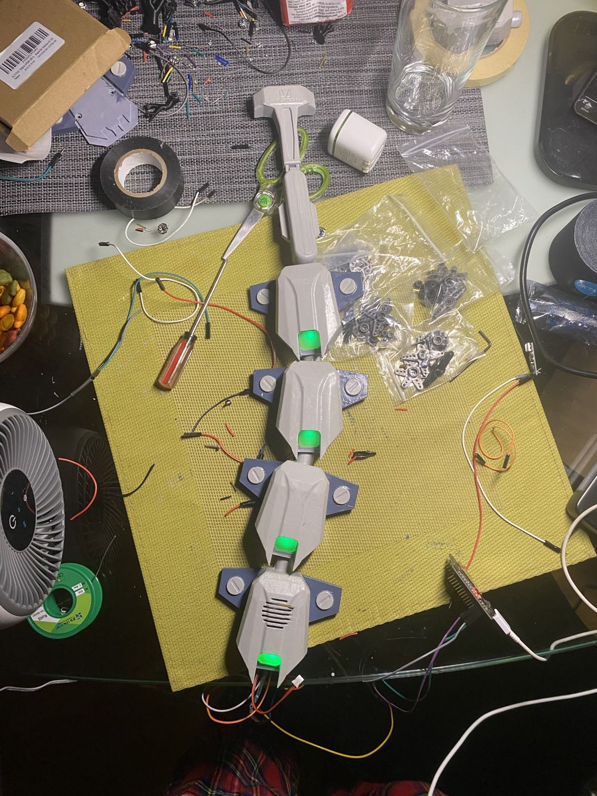

01Goal
I was thinking of a Halloween costume, and making a Sandevistan seemed perfect: it looks cool, and it was a chance to apply electronics to something I could wear.
02How I built it

The model above is the finished design, but the project took several design iterations to get there.
The design itself is pretty simple. The whole thing is connected by a bungee cord, and magnets and sports tape are what make it stick to my back.
The top and bottom of each piece screw into each other, so I could apply filler primer and paint beforehand. Once the pieces looked the way I wanted, I slotted in the LEDs, which I soldered beforehand, and got green plexiglass frosted and cut with a laser cutter. Then I put it all together, with the LED chain running through the same opening as the bungee cord.


03Result
I ended up finishing it just before costume day at school.
04Parts and wiring
- Board. An ESP32-C3 SuperMini runs the lights.
- LEDs. Five WS2812B pixels, one per segment. They're chained from the bottom segment up: each pixel's data out goes to the next one's data in. All the 5V pads are tied together, all the grounds are tied together, and the ground is shared with the board. A 330 Ω resistor sits on the data line.
- Firmware. I drive the pixels with the ESP32's built-in RMT peripheral, so there's no LED library. A green pulse travels up the spine about 0.8 times a second and never goes fully dark. On boot, each pixel flashes white in order, so I can check which segment is which.
- Power. It runs on a battery, and brightness is capped at 90 out of 255 so the draw stays low.
- Diffusers. Frosted green plexiglass, laser cut to fit each window.
05What went right and wrong
The LEDs didn't work on the first try. I stepped back to a test sketch that lit a single pixel, got that working, then extended it to the full chain of five.
The screw-together segments worked out well. I could filler-prime and paint every piece before any electronics went in, which kept paint off the LEDs.
06Looking back
Next time I'd give the board and battery their own spot inside the spine in the first CAD version, so the electronics don't end up hanging off the bottom segment.